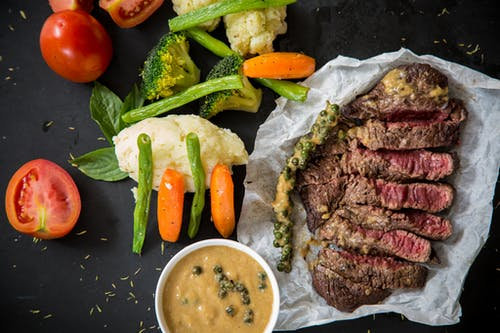

les formes par des craquelins de riz, des chips par du pop-corn... les parents peuvent améliorer l'alimentation de leurs enfants avec ces options de boîte à lunch plus saines
Matthew Mclaughlin , Université de Newcastle ; Alison Brown , Université de Newcastle ; Jannah Jones , Université de Newcastle ; Luke Wolfenden , Université de Newcastle , et Rachel Sutherland , Université de Newcastle
Nous avons développé un programme de boîtes à lunch santé. Ici, nous proposons aux parents des idées pour remplacer les aliments malsains que les enfants pourraient aimer par des aliments plus sains comparables en termes de coût, de goût, de texture et de temps de préparation.
Lennert Veerman Professeur de santé publique, Université Griffith
Professeur lauréat en nutrition et diététique, Université de Newcastle

Maître de conférences, Université d'Adélaïde
L’alimentation saine est donc composée de fruits, légumes, légumineuses, oléagineux (amandes, noix et noisettes, par exemple), graines (de courge, de lin…), poissons, œufs, volaille, etc. Chacun de ces aliments apporte des protéines (poissons, œufs, flocons d’avoines, etc.) des glucides ( céréales et légumineuses), des acides gras de bonne qualité (poissons gras, huile de colza), ainsi que des vitamines, des sels minéraux, et des fibres essentiels au bon fonctionnement de votre corps.
D'abord, l'alimentation healthy sert à prendre soin de soi, de son corps et de sa tête. Car, il faut bien le dire, si l'on décide de consommer des aliments de bonnes qualités, on décide aussi d'apporter les bons nutriments et la meilleure énergie possible à nos organes, comme les muscles, le cœur et le cerveau.